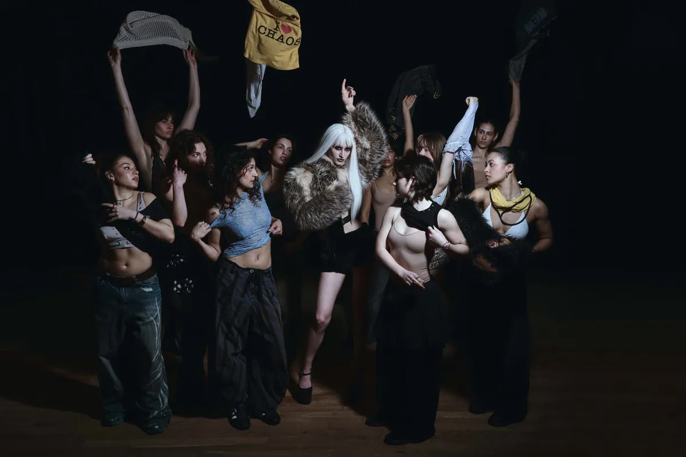
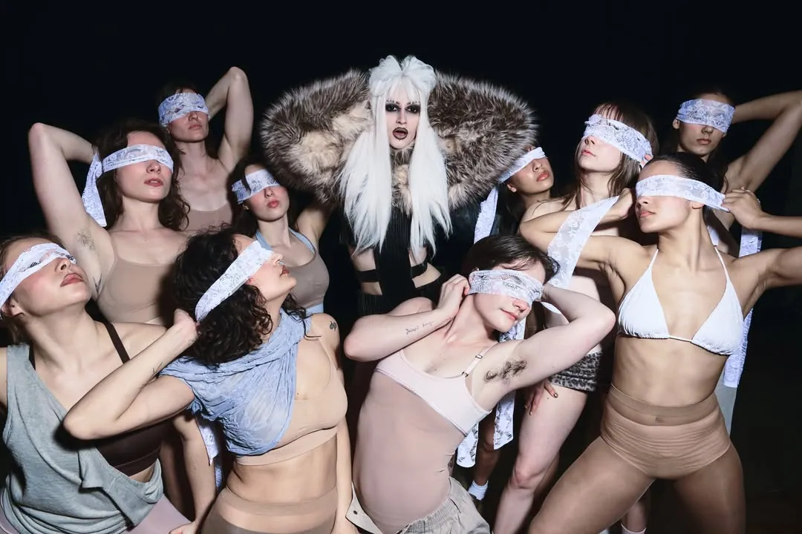

Cult Classics An unpublished visual story for Garment Magazine
- No.
- 01
- Year
- 2026
- Discipline
- Hair & Make-up
- Role
- Make-up & hair
- For
- @garmentmagazine (unpublished)
- Location
- @studiosborgerstraat

“Cult Classics” is an unpublished visual story for Garment Magazine. I did the make-up and hair, together with @kyrakuils and @arsiarg.


Behind the scenes
On set at Studios Borgerstraat.
Credits
Look 1 & 3
- Dress
- @svsanna_
- Bolero
- @_namilia_
- Shoes
- model’s own
Look 2
- Top
- @dp.drg
- Skirt
- @mantas.krikstaponis
Team
- Creative direction
- @pounouuuu
- Photography
- @oliviagracephotographyyy
- Styling
- @pounouuuu, @keituktuks
- Movement direction
- @sophiegisbertz
- Make-up & hair
- Jessica Xie, @kyrakuils, @arsiarg
- Location
- @studiosborgerstraat